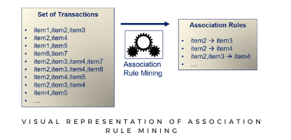
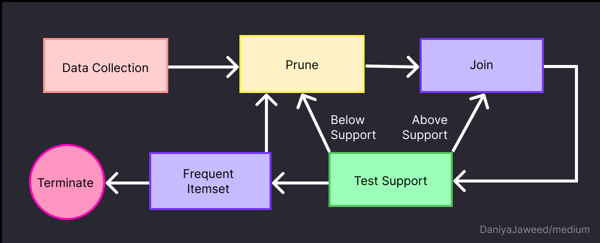
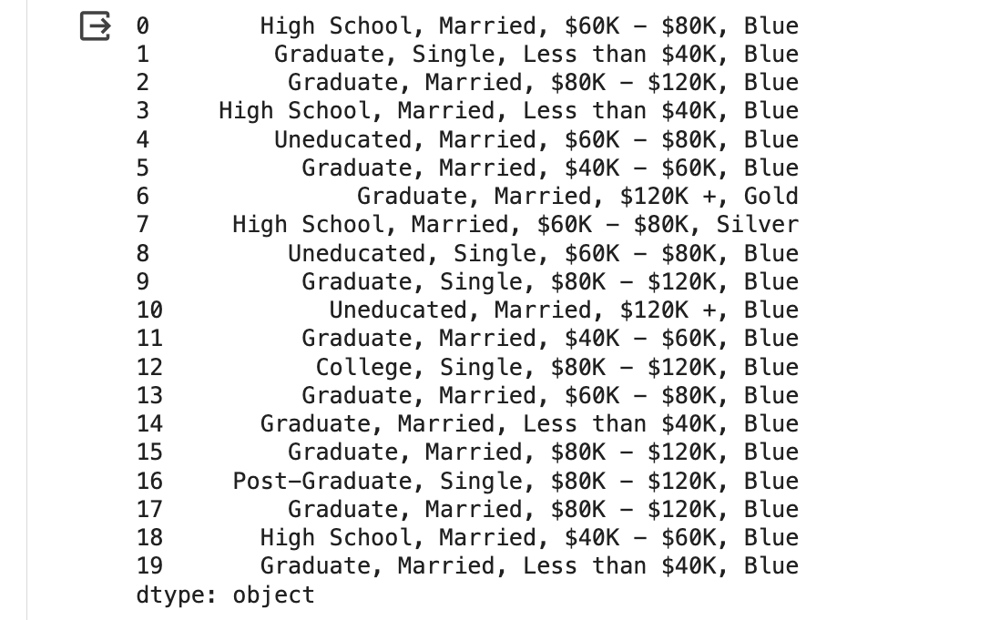
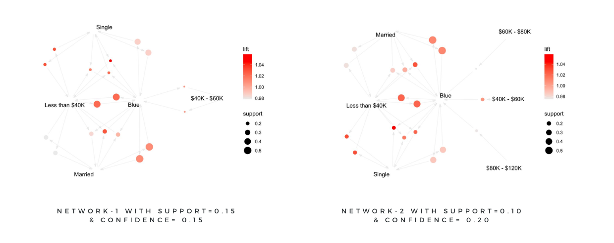
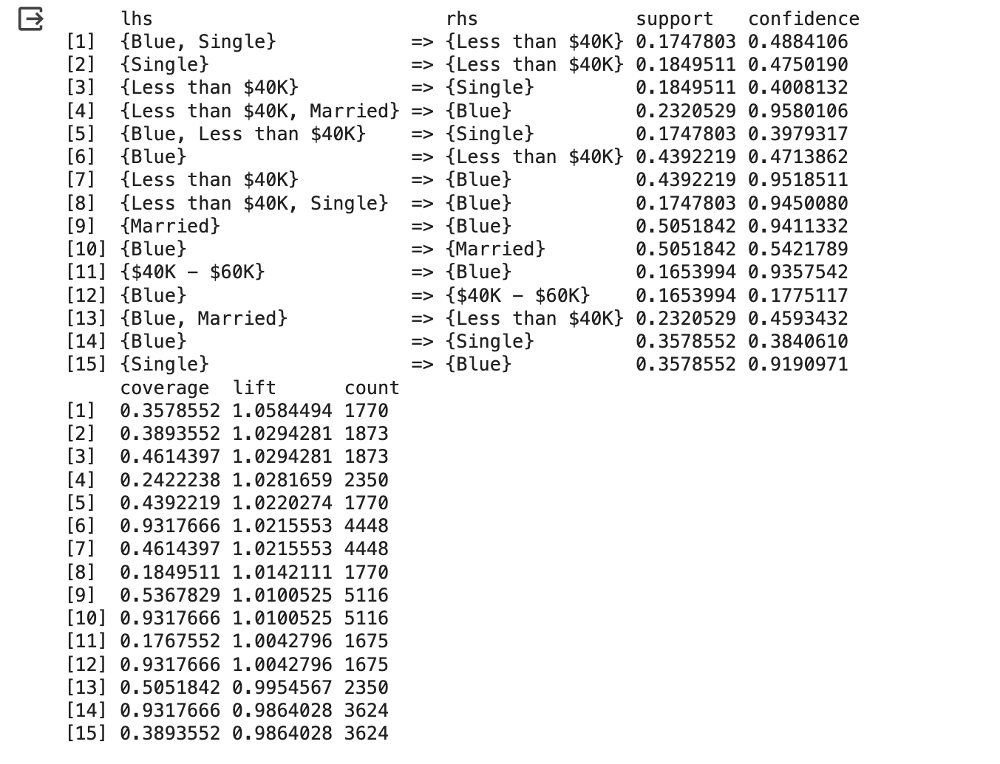
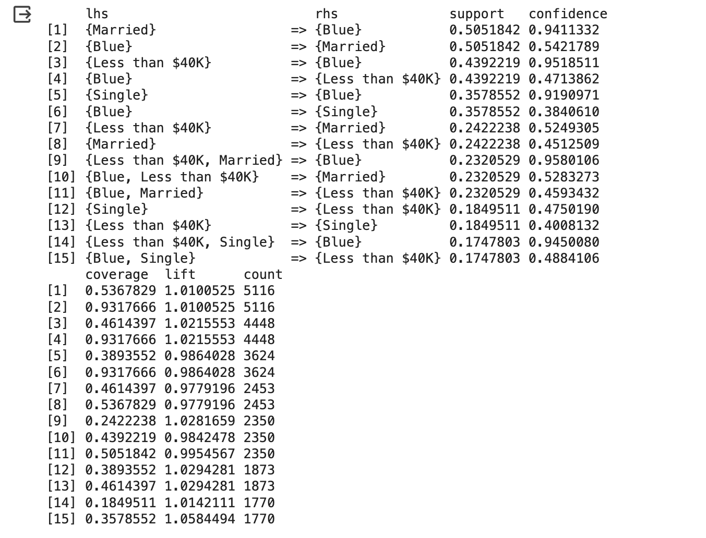
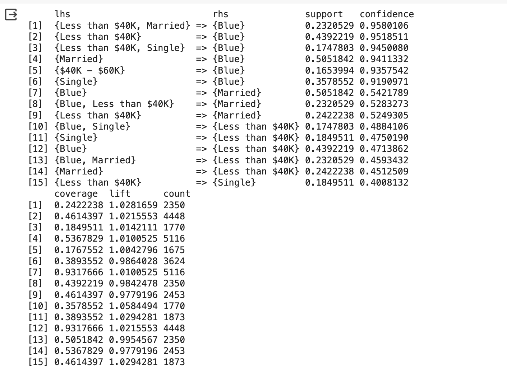

Association Rule Mining (ARM) emerges as a powerful technique for uncovering hidden relationships or associations among vast sets of items within large datasets. Predominantly harnessed in market basket analysis, this method plays a pivotal role in deciphering customer purchasing behaviors. By analyzing patterns of product purchases, businesses can identify which items are frequently bought together, offering invaluable insights for cross-selling strategies and inventory management.
At the core of ARM are 'if-then' rules, serving as the fundamental structure for establishing associations. The 'if' component, known as the antecedent, specifies the condition under scrutiny, whereas the 'then' component, or the consequent, delineates the outcome observed when the antecedent's conditions are satisfied. This structure not only facilitates a systematic exploration of data for patterns but also aids in the prediction and understanding of consumer behavior, enabling organizations to tailor their offerings more effectively to meet customer needs.
In the realm of Association Rule Mining (ARM), three pivotal measures—support, confidence, and lift—play crucial roles in evaluating the strength and relevance of discovered associations between itemsets. Understanding these measures is essential for interpreting the results of ARM analysis effectively.
- 1. Support illuminates the prevalence of an itemset within the dataset, expressed as a percentage of the total transactions. For instance, a support value of 5% for a particular itemset indicates that this combination of items appears in 5% of all transactions. Support helps in identifying the most common itemsets, thereby focusing on significant patterns.
- 2. Confidence offers insight into the reliability of an inferred association rule. It quantifies the proportion of transactions containing the antecedent that also include the consequent. A higher confidence value suggests a strong belief in the rule's validity, indicating that when the antecedent is purchased, the consequent is likely to be purchased as well.
- 3. Lift goes a step further by comparing the rule's observed confidence with what would be expected if the items were independent of each other. A lift value greater than 1 signals that the rule has a positive effect on the sale of the consequent item, indicating a stronger association beyond mere chance. Conversely, a lift value less than 1 implies that the items are unlikely to be bought together, while a value of 1 suggests no association beyond randomness.
Together, these measures provide a comprehensive toolkit for assessing the strength, reliability, and usefulness of the relationships uncovered through ARM. By carefully analyzing support, confidence, and lift, researchers and practitioners can discern truly valuable associations from spurious ones, guiding strategic decisions in marketing, inventory management, and beyond.

Apriori Algorithm:
- The Apriori algorithm stands out as a cornerstone method within the domain of Association Rule Mining (ARM), renowned for its efficacy in unveiling frequent itemsets within a database. This algorithm employs a systematic "bottom-up" strategy, initially pinpointing individual items that frequently occur across transactions. Subsequently, it incrementally constructs larger itemsets, progressively adding one item at a time through a process termed 'candidate generation'. This iterative expansion continues, provided these emerging itemsets maintain a significant presence within the database.
- A distinct feature of the Apriori algorithm is its methodical pruning mechanism, which efficiently eliminates itemsets with insufficient support, thereby streamlining the search space. The iterative cycle of candidate generation and evaluation against the database criteria ensures that only the most relevant and frequently occurring itemsets are considered. The algorithm reaches its conclusion once it can no longer find itemsets that satisfy the minimum support threshold, signifying that all significant associations have been identified.
- Through its structured approach, the Apriori algorithm facilitates a thorough exploration of potential item associations, making it an invaluable tool for identifying patterns that can inform strategic business decisions.
Here's a step-by-step breakdown of how the algorithm operates:
- 1. Initial Count: Construct a table to tally the support count for each item across the dataset.
- 2. Minimum Support Filtering: Items not meeting the minimum support threshold are discarded, ensuring focus on potentially significant itemsets.
- 3. Candidate Generation (Join Step): Formulate new candidate itemsets by combining existing itemsets from the previous iteration. This expansion relies on the principle of only extending itemsets that have previously shown to be frequent.
- 4. Subset Frequency Check: Evaluate all possible subsets of each new candidate itemset. If any subset is not frequent, the candidate itemset is eliminated from consideration.
- 5. Support Count Calculation: Determine the support count for the remaining candidate itemsets by searching the dataset.
- 6. Support Comparison: Compare each candidate itemset's support count against the minimum support threshold. Candidates falling short are removed.
- 7. Iteration: Continue the process iteratively, generating larger itemsets with each round, until no further expansions produce itemsets meeting the minimum support criteria.
By progressively narrowing the search space through the Apriori property, the algorithm enhances its efficiency, allowing it to effectively identify meaningful associations within large datasets without exhaustively examining every possible itemset.

Flowchart of Apriori Algorithm
Data Preparation in Machine Learning:
Data preparation plays a pivotal role in the success of Association Rule Mining (ARM) tasks, much like in other machine learning domains. For the Apriori algorithm—a fundamental method used in ARM—this involves organizing transactional data in a manner that the algorithm can efficiently process and analyze. Unlike clustering, which requires numerical and unlabeled data, the Apriori algorithm deals with categorical data in the form of itemsets from transactions. Each transaction must be encoded as a set of items, allowing the algorithm to identify and evaluate the frequency of itemsets across the dataset. This step is crucial for the Apriori algorithm to effectively generate candidate itemsets and apply the support threshold, enabling the discovery of meaningful associations between items. The structured preparation of transactional data ensures that the algorithm can accurately uncover these associations, leveraging the inherent patterns within the dataset to inform decision-making processes.
Main Steps in Data Transformation for Apriori Algorithm:
1. Selection of Relevant Attributes
2. Transformation into Transactional Format
3. Creation of a Simplified Transaction Dataset
- To analyze the Bank Churners dataset with the Apriori algorithm for finding association rules among various customer attributes, we first needed to transform the original dataset into a transactional format suitable for this type of analysis. The original dataset contained a wide range of information about bank customers, including demographic data, account characteristics, and credit card details. However, the Apriori algorithm requires data in a specific format where each transaction is a set of items purchased together.

The above is the sample of the data before pre-processing i.e., the raw data
- The focus was on four key attributes that could reveal interesting associations: Education_Level, Marital_Status, Income_Category, and Card_Category. These attributes were chosen because they could potentially exhibit meaningful relationships, such as the correlation between a customer's education level and their chosen card category or income bracket.
- To transform the dataset, we first isolated these four columns from the original dataframe. Each row in the transformed dataset represents a "transaction," with the selected attributes for each customer concatenated into a single string. This mimics the format of a market basket transaction, where each item would be a product purchased in a single transaction. In present case, the "items" are the attribute values for each customer.
- The transformation process involved iterating over each row of the selected columns, converting the attribute values into a string, and then joining these strings with a comma separator. The result was a series of strings, each representing the combined attributes of a single customer as a pseudo-transaction. This series was then saved to a CSV file without a header and with each pseudo-transaction on a separate line, creating a simplified transaction dataset ready for analysis with the Apriori algorithm.
- This transformed dataset, now structured as a series of bank customer "transactions," could be analyzed using the arules package in R to uncover association rules among the selected customer attributes. This approach allows for the exploration of patterns and relationships that might not be immediately apparent from the raw data, offering insights into how different customer demographics and behaviors relate to each other within the bank's clientele.

The above is the sample of the data, having undergone preprocessing steps as described earlier, is now prepared and will be used for subsequent Apriori Algorithm analysis.
The implementation of Association Rule Mining (ARM), along with sample data and code, is available at the provided link. This resource encompasses comprehensive details for both implementations, offering a practical perspective on applying ARM techniques within a dataset.
This analysis embarked on a detailed examination of the dataset through the lens of unsupervised learning, employing both K-means and hierarchical clustering techniques to uncover inherent groupings within the data. The preparatory phase involved standardizing the dataset and applying Principal Component Analysis (PCA), reducing dimensionality while retaining significant variance. This step was crucial for enhancing clustering efficacy and interpretability.
The analysis of the Bank Churners dataset through the Apriori algorithm unearthed significant insights, particularly highlighting a robust association between individuals with incomes less than $40K and the "Blue" card classification, with confidence levels surpassing 94%. Marital status also emerged as a pivotal factor, with both married and single individuals showing a high likelihood of falling into the "Blue" category, at 94.11% and 91.91% respectively. This pattern extended to those earning between $40K and $60K, who demonstrated a 93.58% association with the "Blue" classification, underscoring a clear link between income levels, marital status, and card preference. Furthermore, a reciprocal relationship between the "Blue" classification and marital status was identified, indicating a significant intersection of economic characteristics and demographic factors within the dataset. These findings not only reveal the economic conditions prevalent among certain segments but also suggest a deeper, interconnected relationship between income, marital status, and banking preferences, potentially enriched by further analysis of lift values for a more comprehensive understanding of the dataset's dynamics.

- Analysis of Top 15 Association Rules (Lift):
Examining the top 15 association rules ranked by lift provides further insights into the strength of relationships between different variables. Lift measures the degree of association between antecedent and consequent items, indicating how much more likely the consequent is, given the presence of the antecedent, compared to its expected occurrence. Notably, associations involving the "Blue" product and demographic characteristics such as marital status and income levels feature prominently. For instance, the rule indicating that being single and preferring the "Blue" product is associated with an income of less than $40K demonstrates a lift value of 1.058, indicating a 5.8% increase in the likelihood of this association occurring compared to random chance. Similarly, the association between being single and earning less than $40K yields a lift value of 1.029, suggesting a 2.9% increase in the likelihood of this association. These findings underscore the significance of considering lift values in understanding the strength and relevance of association rules for informed decision-making in marketing strategies and consumer targeting efforts.

Top 15 Rules by Lift
- Analysis of Top 15 Association Rules (Support):
The top 15 association rules, sorted by support, offer insights into the prevalence of specific associations within the dataset. Support reflects the relative frequency of an itemset, indicating its significance in the dataset. Notably, associations involving the "Blue" product and demographic attributes such as marital status and income levels dominate this set of rules. For instance, the rule indicating that being married is associated with preferring the "Blue" product boasts the highest support at 50.52%, underscoring the substantial occurrence of this association in the dataset. Similarly, the rule demonstrating that preferring the "Blue" product is associated with earning less than $40K also exhibits high support at 43.92%, indicating its frequent occurrence. These findings highlight the prevalence of specific consumer behavior patterns and underscore the importance of understanding and leveraging these associations in marketing strategies and business decision-making processes.

Top 15 Rules by Support
- Analysis of Top 15 Association Rules (Confidence):
The top 15 association rules, ranked by confidence, shed light on compelling consumer behavior trends and product preferences within the dataset. With confidence serving as a measure of the reliability of the associations, these rules provide valuable insights into the strength of the relationships between various demographic factors and product choices. Notably, individuals earning less than $40K demonstrate a robust preference for the "Blue" product, showcasing confidence levels exceeding 95% across different marital statuses. Moreover, married customers exhibit a notable inclination (94.1% confidence) towards the "Blue" product, while single individuals display a slightly lower yet significant preference (91.9% confidence). Income brackets also emerge as influential factors, with the $40K - $60K range associated with a confidence of 93.6% in selecting the "Blue" product. Bidirectional associations underscore the complex interplay between demographic characteristics and product preferences, underscoring the importance of tailored marketing strategies for enhancing consumer satisfaction and optimizing business outcomes.

Top 15 Rules by Confidence
The application of the Apriori algorithm to the Bank Churners dataset, focusing on attributes like Education_Level, Marital_Status, Income_Category, and Card_Category, has revealed significant associations that highlight the influence of socio-economic factors on banking preferences. Notably, a strong link was found between lower income levels, marital status, and preference for the "Blue" card category. This insight underscores the importance of understanding customer demographics to tailor financial products and services effectively. The findings emphasize how marital status, in conjunction with income levels, plays a crucial role in shaping customers' banking choices, offering a nuanced view of the socio-economic dynamics at play.
Leveraging association rule mining through the Apriori algorithm has proven to be a powerful approach for uncovering complex relationships within the dataset, providing valuable insights into customer behavior. These insights offer financial institutions a data-driven basis for optimizing product offerings, enhancing marketing strategies, and ultimately improving customer satisfaction and loyalty. The study serves as a testament to the potential of machine learning techniques in extracting meaningful patterns from transactional data, demonstrating their critical role in informed decision-making and strategic planning in the banking sector.